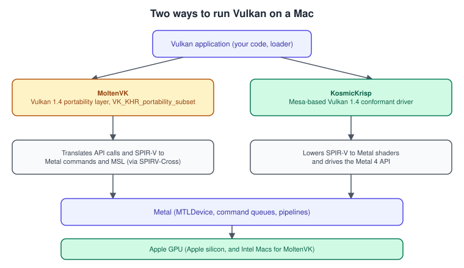
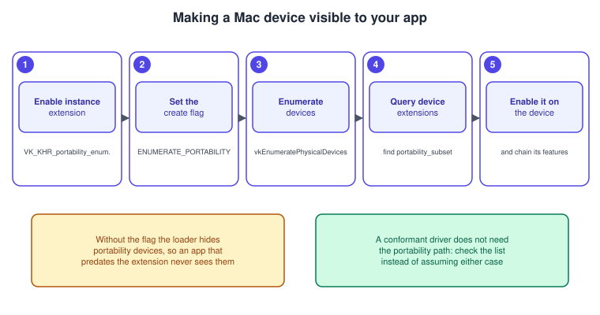
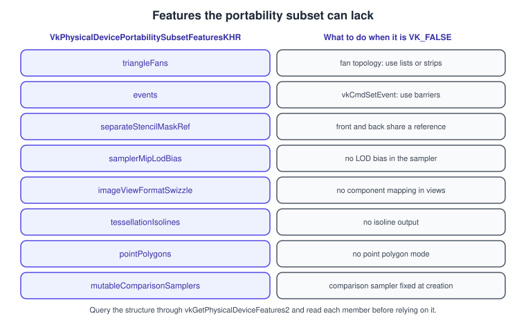

Vulkan on Apple: MoltenVK and KosmicKrisp
|
This content was generated with the assistance of AI and should be verified against the official documentation before being relied on in production. |
Apple platforms have one native graphics API, Metal, and no native Vulkan driver. A Vulkan renderer can still run on a Mac or on an iPhone, because a layer between the application and Metal turns Vulkan calls into Metal calls. Until 2025 there was one such layer, MoltenVK. Since the LunarG Vulkan SDK 1.4.363.0 there are two: MoltenVK and KosmicKrisp, a Mesa-based driver that LunarG builds, that passes the Vulkan 1.4 conformance tests and is built on Metal 4. This page explains what each one is, how an application sees them, what to do in the code so that the same renderer runs on both and on a native driver, which Vulkan features a layer can lack, and how to choose.
The facts were checked in November 2026. The versions documented are Vulkan 1.4 (headers 1.4.3xx), the LunarG Vulkan SDK 1.4.363.0 for macOS, MoltenVK as a Vulkan 1.4 portability layer and KosmicKrisp as a Vulkan 1.4 conformant driver that needs macOS 26 or later. MoltenVK itself runs on macOS 12, iOS 15 and tvOS 15 and later. The running example, the Vulkan Bookshelf (C++20, Vulkan-Hpp RAII, VMA, GLFW or SDL3, Slang shaders with GLSL and HLSL as alternatives, Vulkan 1.3 minimum), is built on the desktop pages and runs on a Mac through the paths below without changes to the renderer, only to instance and device creation. The first two Bookshelf stages are in Bookshelf, Part 1: From a Triangle to a Textured Book.
Apple’s own API is covered in the Metal sub-section. If your target is only Apple hardware, Metal is the first-party route and exposes everything the hardware does; Vulkan on Apple is for code that must also run elsewhere. How a GPU of the Apple family works, which both layers must map onto, is in GPU Architecture and TBDR. For a comparison of translation approaches in general, see Cross-Platform Translation Layers.
Two layers on top of Metal

| Property | MoltenVK | KosmicKrisp |
|---|---|---|
What it is |
A layered implementation of Vulkan on Metal, hosted under the Khronos organisation. It translates each Vulkan call into Metal calls and converts SPIR-V to the Metal Shading Language. |
A Vulkan driver (an ICD) in the Mesa project that LunarG builds and ships with the SDK. It lowers SPIR-V to Metal shaders and uses the Metal 4 API. |
Vulkan version |
Vulkan 1.4 in the 1.4.x releases, as a portability implementation (not fully conformant) |
Vulkan 1.4, conformant, from SDK 1.4.363.0 |
Apple requirements |
macOS 12, iOS 15, tvOS 15 and later at run time; Xcode 15 or later to build; Intel Macs and Apple silicon; also visionOS |
macOS 26 or later, because it is built on Metal 4; Apple silicon |
Portability subset |
Yes: |
A conformant driver does not need the subset, so check the extension lists instead of assuming |
Recommended by Khronos for |
Intel Macs and iOS |
Apple silicon Macs |
Validation tools |
Loader and layers from the SDK. GPU-assisted validation and Debug Printf do not work with it. |
GPU-assisted validation and Debug Printf work, and |
Status |
The repository is community-maintained on a best-effort basis; Khronos has deprecated it in favour of KosmicKrisp |
Active; extension additions in each SDK |
KosmicKrisp is new, and the extension list changes with every SDK. The 1.4.363.0 release added, among others, VK_EXT_map_memory_placed,
VK_EXT_provoking_vertex, VK_EXT_depth_clip_enable, VK_AMD_buffer_marker, VK_KHR_deferred_host_operations, and, on M5 and later,
VK_EXT_sampler_filter_minmax and depth bounds. The macOS headers also list extensions that a driver may not implement: a name in a header does not
promise support, so every renderer queries the driver at run time, as the code below does.
Why Vulkan on Apple was not possible in the older books
Both books describe Vulkan 1.0 for Windows and Linux, with no mention of Apple hardware. Today the SDK itself ships for macOS, and the same loader, validation layer, profile and capture tooling work there. A renderer written against Vulkan 1.4 can use one codebase on Linux, Windows, Android and macOS, with the build and the surface creation as the differences.
The Vulkan SDK for macOS
The LunarG SDK is the recommended way to get everything needed on macOS: the Vulkan loader, the validation layers, vulkaninfo, vkcube, the
shader tools (glslc, dxc, slangc, spirv-val), the profiles tooling, and both Apple drivers. Install it, then source the environment
script that the SDK provides so that VULKAN_SDK and the loader’s search paths point to it, and run vulkaninfo to see which devices the
loader enumerates. The setup in general is in
Setup: SDK and Toolchain and the loader in
Instance, Loader and Layers.
The loader finds drivers through JSON manifests. The environment variable VK_DRIVER_FILES replaces that search with a list of manifests, which
is how you force one driver for a test:
# After sourcing the SDK's setup script, VULKAN_SDK is set.
vulkaninfo --summary # shows every device the loader sees
# Force a single driver by naming its manifest (the file names are in the SDK's share/vulkan/icd.d folder)
VK_DRIVER_FILES="$VULKAN_SDK/share/vulkan/icd.d/<manifest>.json" vulkaninfo --summarySource: Vulkan Guide: Loader
A frequent surprise is that vulkaninfo and an application show different devices. A device that needs the portability subset is not listed
unless the application sets the instance flag described next, and vulkaninfo sets it, so it can show a device that a naive application never sees.
Portability enumeration and the subset
Two extensions exist because a layer can be a correct subset of Vulkan and not the whole thing.
-
VK_KHR_portability_enumerationis an instance extension. A device that exposesVK_KHR_portability_subsetis not a fully conformant Vulkan implementation, so the loader hides it fromvkEnumeratePhysicalDevicesby default; this protects applications that do not know about the subset. An application that does know setsVK_INSTANCE_CREATE_ENUMERATE_PORTABILITY_BIT_KHRinVkInstanceCreateInfo::flags, and the loader then includes such devices. -
VK_KHR_portability_subsetis a device extension. It reports the Vulkan features that the implementation cannot provide, in the structureVkPhysicalDevicePortabilitySubsetFeaturesKHR, and its limits inVkPhysicalDevicePortabilitySubsetPropertiesKHR. An application that uses a device which has it must enable it when creating the device and chain the features structure with the values it intends to rely on.

The code below creates an instance that works on every platform. It adds the portability pieces only when the loader offers them, so the same function runs on Linux, Windows and Android as well.
#include <vulkan/vulkan_raii.hpp>
#include <algorithm>
#include <cstring>
#include <vector>
static bool hasExtension(const std::vector<vk::ExtensionProperties>& list, const char* name)
{
return std::any_of(list.begin(), list.end(),
[&](const vk::ExtensionProperties& e) { return std::strcmp(e.extensionName, name) == 0; });
}
vk::raii::Instance createInstance(vk::raii::Context& context, std::vector<const char*> requiredByWindowSystem,
bool validation)
{
const auto available = context.enumerateInstanceExtensionProperties();
std::vector<const char*> extensions = std::move(requiredByWindowSystem); // for example from GLFW or SDL3
vk::InstanceCreateFlags flags{};
if (hasExtension(available, VK_KHR_PORTABILITY_ENUMERATION_EXTENSION_NAME)) {
extensions.push_back(VK_KHR_PORTABILITY_ENUMERATION_EXTENSION_NAME);
flags |= vk::InstanceCreateFlagBits::eEnumeratePortabilityKHR;
}
// VK_KHR_get_physical_device_properties2 is core in Vulkan 1.1 and later; request it only for a 1.0 instance.
std::vector<const char*> layers;
if (validation) {
extensions.push_back(VK_EXT_DEBUG_UTILS_EXTENSION_NAME);
layers.push_back("VK_LAYER_KHRONOS_validation");
}
vk::ApplicationInfo app{"Vulkan Bookshelf", VK_MAKE_API_VERSION(0, 1, 0, 0),
"bookshelf-engine", VK_MAKE_API_VERSION(0, 1, 0, 0), VK_API_VERSION_1_3};
vk::InstanceCreateInfo info{flags, &app, layers, extensions};
return vk::raii::Instance(context, info);
}An application that does not set the flag still runs on Linux and Windows, where the devices are conformant. On a Mac with MoltenVK only, the same application then reports "no Vulkan device found". That is the most common first problem when a renderer is moved to macOS.
The device side adds the subset extension when the physical device offers it, and queries what is missing:
struct DeviceChoice {
vk::raii::PhysicalDevice gpu;
bool isPortabilitySubset;
vk::PhysicalDevicePortabilitySubsetFeaturesKHR subset; // filled in only if isPortabilitySubset
};
DeviceChoice inspect(const vk::raii::PhysicalDevice& gpu)
{
DeviceChoice c{gpu, false, {}};
const auto exts = gpu.enumerateDeviceExtensionProperties();
c.isPortabilitySubset = std::any_of(exts.begin(), exts.end(), [](const vk::ExtensionProperties& e) {
return std::strcmp(e.extensionName, VK_KHR_PORTABILITY_SUBSET_EXTENSION_NAME) == 0;
});
if (c.isPortabilitySubset) {
auto chain = gpu.getFeatures2<vk::PhysicalDeviceFeatures2,
vk::PhysicalDevicePortabilitySubsetFeaturesKHR>();
c.subset = chain.get<vk::PhysicalDevicePortabilitySubsetFeaturesKHR>();
}
return c;
}
vk::raii::Device createDevice(const DeviceChoice& c, uint32_t queueFamily)
{
float priority = 1.0f;
vk::DeviceQueueCreateInfo queue{{}, queueFamily, 1, &priority};
std::vector<const char*> extensions = {VK_KHR_SWAPCHAIN_EXTENSION_NAME};
if (c.isPortabilitySubset) {
extensions.push_back(VK_KHR_PORTABILITY_SUBSET_EXTENSION_NAME); // required whenever the device has it
}
// Vulkan 1.3 features that the Bookshelf relies on.
vk::StructureChain<vk::DeviceCreateInfo,
vk::PhysicalDeviceFeatures2,
vk::PhysicalDeviceVulkan13Features,
vk::PhysicalDevicePortabilitySubsetFeaturesKHR> chain;
chain.get<vk::PhysicalDeviceVulkan13Features>().dynamicRendering = VK_TRUE;
chain.get<vk::PhysicalDeviceVulkan13Features>().synchronization2 = VK_TRUE;
auto& info = chain.get<vk::DeviceCreateInfo>();
info.setQueueCreateInfos(queue).setPEnabledExtensionNames(extensions);
if (c.isPortabilitySubset) {
chain.get<vk::PhysicalDevicePortabilitySubsetFeaturesKHR>() = c.subset; // enable what the device supports
} else {
chain.unlink<vk::PhysicalDevicePortabilitySubsetFeaturesKHR>(); // keep the chain clean elsewhere
}
return vk::raii::Device(c.gpu, chain.get<vk::DeviceCreateInfo>());
}The structure lists fifteen features. Each one is VK_TRUE if the implementation supports it:

| Member | Meaning | Workaround when it is false |
|---|---|---|
|
Constant alpha blend factors |
Express the blend with a constant colour or with a shader |
|
|
Use pipeline barriers |
|
Image views whose format differs in component count or bit size |
Create views with a compatible format only |
|
Component mapping in image views |
Swizzle in the shader |
|
2D or 2D-array views of a 3D image |
Use a 3D view or a copy |
|
Multisampled 2D-array images |
Use one image per layer |
|
Updating descriptors that use comparison samplers |
Create separate descriptors for comparison samplers |
|
Point polygon mode |
Draw points as a point-list primitive |
|
Mipmap LOD bias in the sampler |
Add the bias in the shader to the sampled level |
|
Different front and back stencil references |
Use the same reference, or two draws |
|
Interpolation functions at sample rate (only meaningful with |
Do not use the interpolation instructions |
|
Isoline output from tessellation (only meaningful with tessellation) |
Use triangles |
|
Point output from tessellation |
Use triangles |
|
Triangle fan topology |
Convert fans to lists or strips when loading the mesh |
|
Reading a vertex attribute that extends past its binding’s stride |
Make the stride at least as large as every attribute |
The Bookshelf only needs triangle lists, dynamic rendering, synchronization2 (its barriers are not events) and ordinary samplers, so it runs on a portability device without workarounds. A renderer that uses events, triangle fans or point-polygon rendering must add the fallback or reject the device. The general idea behind features and chains is in Physical and Logical Devices and Versions, Profiles and Extensions.
The surface: CAMetalLayer
Vulkan presents through a surface, and on Apple platforms the surface is created from a CAMetalLayer, the layer class that Metal draws into. The
extension is VK_EXT_metal_surface. The older VK_MVK_macos_surface and VK_MVK_ios_surface are marked obsolete and must not be used in new code.
When you use GLFW or SDL3 you do not create the layer yourself: glfwCreateWindowSurface and SDL_Vulkan_CreateSurface create it and the
required instance extensions come from glfwGetRequiredInstanceExtensions or SDL_Vulkan_GetInstanceExtensions. Create the instance with these names plus the portability extension, as in the function above.
// With GLFW: the library creates the CAMetalLayer and the VkSurfaceKHR.
#define GLFW_INCLUDE_NONE
#include <GLFW/glfw3.h>
std::vector<const char*> windowExtensions()
{
uint32_t count = 0;
const char** names = glfwGetRequiredInstanceExtensions(&count); // includes VK_EXT_metal_surface on macOS
return std::vector<const char*>(names, names + count);
}
vk::raii::SurfaceKHR createSurface(const vk::raii::Instance& instance, GLFWwindow* window)
{
VkSurfaceKHR raw = VK_NULL_HANDLE;
if (glfwCreateWindowSurface(*instance, window, nullptr, &raw) != VK_SUCCESS) {
throw std::runtime_error("could not create the surface");
}
return vk::raii::SurfaceKHR(instance, raw);
}Source: GLFW: Vulkan guide
If you create the surface yourself, for example in an iOS UIView subclass, make the view’s layer class CAMetalLayer and pass the layer in
VkMetalSurfaceCreateInfoEXT::pLayer, with VK_USE_PLATFORM_METAL_EXT defined. If you create the layer by hand rather than through a view, make
the view its delegate. The surface and swapchain logic is otherwise the same as on every other platform and is in
Window System Integration and the Swapchain.
Metal supports only a small number of drawables, so ask for three swapchain images (triple buffering) rather than relying on the surface’s maximum, especially in full-screen direct-to-display mode.
What a layer changes in everyday use
Shaders and pipelines
Both layers consume SPIR-V. MoltenVK converts it to the Metal Shading Language and compiles that at run time, which adds start-up cost when many pipelines are created. Storing the converted shaders in a Vulkan pipeline cache avoids repeating the conversion at load time, so save the cache to disk and load it at start-up as the Bookshelf does. A native Metal renderer has the same concern and solves it with binary archives; see Shader Compilation and Pipeline Caching. The shading language side, where Slang, GLSL and HLSL all produce SPIR-V, is in Shaders, SPIR-V and Shading Languages; a shader that compiles to SPIR-V for a desktop GPU works on a Mac, with the exceptions of the features in the table above.
Pipeline creation is covered in Graphics Pipeline Overview.
Known differences in MoltenVK
| Area | Behaviour |
|---|---|
Primitive restart |
Always enabled, because Metal cannot disable it. |
Polygon mode point |
|
Pipeline statistics queries |
|
Allocation callbacks |
|
Layers |
MoltenVK does not load layers; use the loader and layers of the SDK. |
Timestamp period |
On non-Apple GPUs |
Buffer device address and descriptor indexing |
Tied to Metal’s argument buffer tiers: |
Features that need Metal private API |
|
MoltenVK is configured through the VK_EXT_layer_settings extension with the layer name MoltenVK (preferred), environment variables whose names begin with
MVK_CONFIG_, or build-time settings. Layer settings override environment variables, which override build settings. A handful that help in daily
work: MVK_CONFIG_DEBUG logs shader conversion, MVK_CONFIG_AUTO_GPU_CAPTURE_SCOPE and MVK_CONFIG_AUTO_GPU_CAPTURE_OUTPUT_FILE write a Metal GPU
capture for Xcode, and METAL_CAPTURE_ENABLED=1 must be set as an environment variable or an Xcode scheme option for captures to work.
The two layers also differ in the Vulkan features they report. An unqualified assumption such as "descriptor indexing works" breaks on one of them. The renderer’s feature selection must follow the structures it queries, not the platform name. The bindless techniques are in Bindless: Descriptor Indexing, Buffer and Heap.
Validation, capture and debugging
The Khronos validation layer works through the SDK’s loader on macOS. With KosmicKrisp GPU-assisted validation and Debug Printf work, and VK_EXT_debug_utils
names and labels reach Metal objects, so a Vulkan label shows up in Xcode’s Metal debugger. With MoltenVK those two validation modes are unavailable. For a frame capture, use Xcode’s Metal capture with the settings above; Xcode is the tool that understands what the layer produced. The
Metal tools are described in Debugging and Profiling and the Vulkan side in
Validation and Debug Utils and
Debugging and Capture Tools.
Linking MoltenVK into an application
When the SDK’s loader is not used, which is the normal case on iOS (there is no system loader), MoltenVK is linked into the application as an XCFramework. Static linking is simplest; the dynamic form needs the XCFramework in "Embed Frameworks" with "Embed and Sign" and a runpath that matches where it sits at run time. The steps:
-
Add MoltenVK’s
includefolder to the target’s Header Search Paths. -
Add the XCFramework to the target (static, or dynamic with Embed and Sign, and a matching Runpath Search Path).
-
Link
libc++if the application is not written in C++, and the system frameworks that MoltenVK uses (Metal, Foundation, QuartzCore, CoreGraphics, IOSurface, and AppKit or UIKit) if automatic framework linking is off. -
Define
VK_USE_PLATFORM_METAL_EXT(or includemvk_vulkan.h) soVK_EXT_metal_surfaceis declared. -
Create the instance with the portability flag, as above; there is no loader that sets it for you, but the flag is accepted.
-
Build with the latest public Xcode.
Source: MoltenVK Runtime User Guide
Static linking requires Xcode 14 or later because of Apple’s static linkage model. Test the iOS build on a device through Xcode as well as in the simulator. iOS is an area where MoltenVK is still the recommended layer.
When to write Metal instead
A layer is the right tool when the renderer already exists and must also run on Apple platforms, or when one engine must target Linux, Windows, Android and macOS. It adds a translation step, which costs CPU time in the driver and sometimes cannot express a Metal feature that Vulkan has no equivalent for: tile shaders, tile memory, MetalFX upscaling, Metal 4’s argument tables and residency sets, ray tracing through Metal’s own API, and visionOS integration. If your game only ships on Apple devices, write it in Metal and read Migrating from OpenGL and metal-cpp and Game Porting; for Vulkan code that you want to bring to Apple through Metal yourself, the same Metal pages show what the target looks like.
What changed since the older guides
| Older statement | Where it stands in November 2026 |
|---|---|
Vulkan runs on Windows and Linux (and Android). |
The LunarG SDK ships for macOS, MoltenVK is a Vulkan 1.4 portability layer on macOS and iOS, and KosmicKrisp is a Vulkan 1.4 conformant driver for macOS 26 and later. |
The window-system surfaces are Win32, Xlib or XCB and Wayland, with no Apple surface. |
On Apple, |
|
A device with the portability subset is hidden unless the instance sets |
One Vulkan implementation per vendor. |
Several layers and drivers can coexist on one machine, and |
Debug with the layers that the vendor driver provides. |
GPU-assisted validation and Debug Printf work with KosmicKrisp and not with MoltenVK. |
See it in
The Apple API itself: Metal. The Android counterpart, with a platform-owned loader and surface, is Vulkan on Android. The C++ bindings used in the code are explained in Vulkan-Hpp, RAII and C++ Bindings.